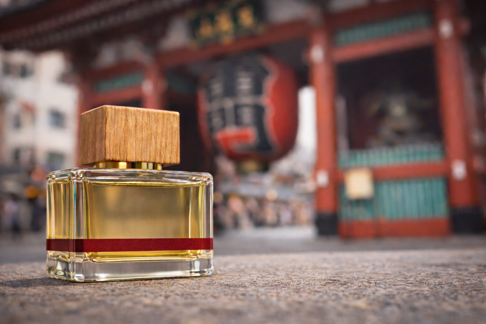
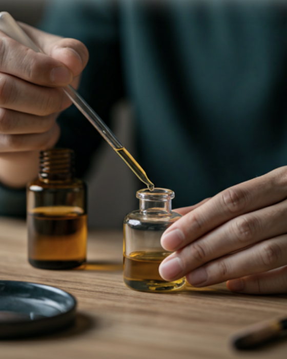
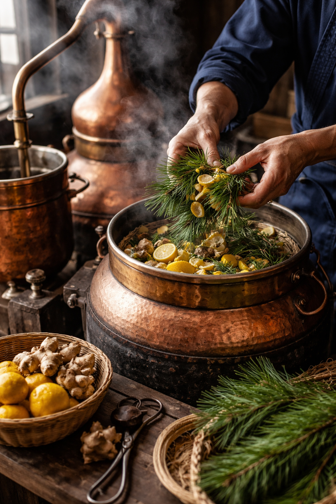
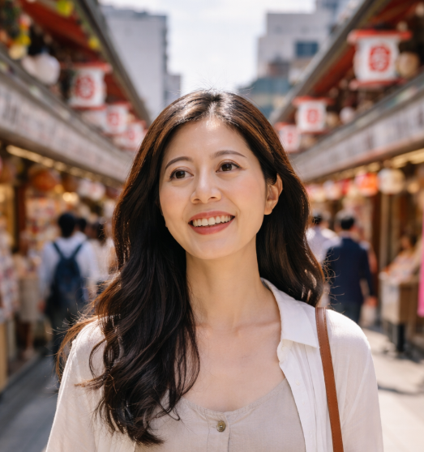

For culture-focused travelers
For visitors who want more than sightseeing and want to take home a meaningful part of Japan.
A perfume experience unique to Asakusa
SCENT OF ASA is a cultural perfume workshop where you create a scent inspired by your time in Japan. More than perfume-making, it is a way to turn your trip into something personal you can take home and wear again.


For visitors who want more than sightseeing and want to take home a meaningful part of Japan.

For two people who want to create a shared memory in Tokyo and keep it after the journey ends.

For those looking for a personal souvenir with story, craft, and emotional value.
Asakusa is not only a place to visit. It is a place full of atmosphere, story, and cultural memory. Instead of buying a souvenir off the shelf, you create one that reflects your own experience of Japan.

SCENT OF ASA is not only about choosing a fragrance you like. It is about discovering materials, background, and the Japanese sense of making that gives the experience depth.




Your custom perfume becomes a personal reminder of your time in Japan long after the trip ends.
You choose more than a smell. You choose a story, a mood, and a memory connected to your journey.
The scent is designed to reconnect you with your trip, especially in the quiet moments after you return home.
Explore scents, moods, and ideas inspired by your trip and what you want to remember.
Blend your own perfume with easy guidance, even if it is your first time.
Leave Asakusa with a perfume that is personal, memorable, and made by you.

Take home your finished 50ml perfume bottle.
You do not need perfume knowledge or previous experience. The workshop is designed to feel clear, welcoming, and easy to fit into a travel day in Asakusa.
The best travel souvenirs carry your own story. Your custom perfume becomes a small piece of Asakusa that stays with you after you return home.
A favorite for visitors who want more than a typical activity and more than a typical souvenir.
"A beautiful and memorable experience in Asakusa. I loved taking home something I made myself."

"It felt personal, calm, and very different from ordinary sightseeing."
"We made it together during our Tokyo trip, and it became one of our favorite memories."
Turn part of your trip into something you can carry home, wear again, and remember long after the journey ends.